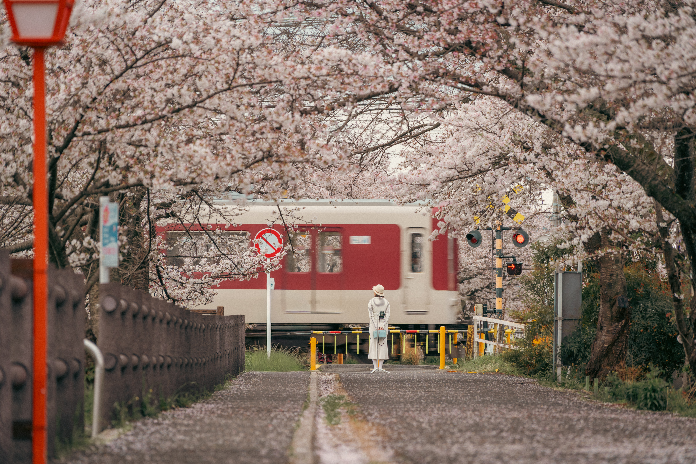
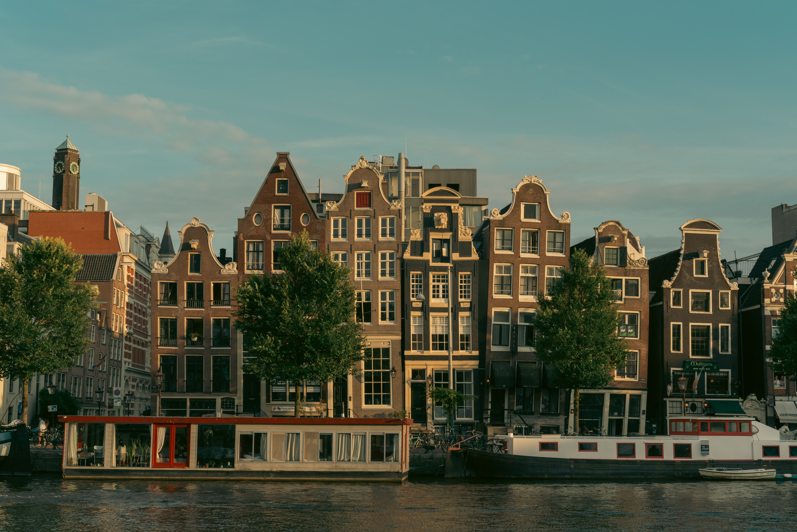
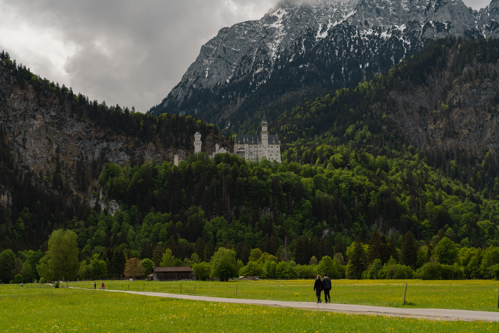

PhD Student · The University of Osaka
Muhammad Fadhlan Anshor
I study heterogeneous catalysis with machine-learning interatomic potentials and multiscale simulation. Away from the terminal, I’m usually behind a camera.
Latest paper CO coadsorption effects on the water–gas shift reaction over Cu clusters on Cu(111) · PCCP, 2026About
Two ways of looking closely.
I’m a second-year PhD student in the Department of Precision Engineering at The University of Osaka, Japan. My research sits where machine learning meets computational chemistry: I use machine-learning interatomic potentials (MLIPs) and multiscale simulation to understand how heterogeneous catalysts behave under realistic reaction conditions.
I’m also a photographer. Research and photography ask for the same habits (patience, careful observation and an eye for structure), and each keeps the other sharp.
- Position
- PhD student, 2nd year
- Department
- Precision Engineering
- University
- The University of Osaka
- Based in
- Osaka, Japan
- Focus
- MLIPs · multiscale simulation · catalysis
- Beyond the lab
- Photography
Research
From atoms to reaction rates.
My work links atomistic simulation with reaction kinetics. Machine-learning force fields let me reach length and time scales that first-principles calculations alone cannot, and what they reveal about surface structure and adsorbate interactions feeds into microkinetic models of catalytic activity.
-
01
Machine-learning interatomic potentials
Training and applying ML force fields that bring near first-principles accuracy to large-scale, GPU-accelerated molecular dynamics.
-
02
Multiscale modeling
Carrying atomistic insight into microkinetic models, including coverage-dependent lateral interactions between adsorbates.
-
03
Heterogeneous catalysis
Copper catalysts for the water–gas shift reaction: how supported Cu clusters and coadsorbed CO shape activity.
- Methods
- Tools
Publications
Peer-reviewed articles.
-
2026
CO coadsorption effects on the water–gas shift reaction over Cu clusters on Cu(111): insights from the machine learning force field and microkinetic modeling
Physical Chemistry Chemical Physics 28, 11187–11197 (2026)
Combines a machine-learning force field with DFT and microkinetic modeling to show how coadsorbed CO shapes water–gas shift activity on Cu3, Cu4 and Cu7 clusters supported on Cu(111).
@article{Anshor2026, author = {Anshor, Muhammad Fadhlan and Halim, Harry Handoko and Morikawa, Yoshitada}, title = {{CO} coadsorption effects on the water--gas shift reaction over {Cu} clusters on {Cu(111)}: insights from the machine learning force field and microkinetic modeling}, journal = {Physical Chemistry Chemical Physics}, year = {2026}, volume = {28}, number = {18}, pages = {11187--11197}, doi = {10.1039/D5CP05031F} }
Photography
Frames from outside the lab.
A small, changing selection of my photographs, made in the hours between simulations.
{kind=link}

{kind=link}
{kind=link}
{kind=link}
{kind=link}

{kind=link}

Contact
Let’s talk.
I’m always glad to hear about machine-learning potentials, catalysis and possible collaborations, or simply to talk cameras.